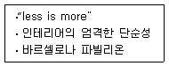
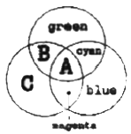
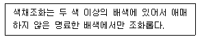
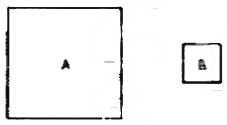
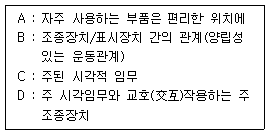
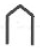
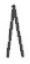
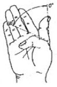
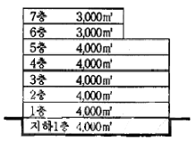

실내건축기사(구) (2006-09-10 기출문제)
1과목: 실내디자인론
1. 휴먼 스케일(Human Scale)에 대한 설명 중 틀린 것은?
- 휴먼 스케일을 고려한 공간디자인은 친밀하게 느낄수 있다.
- 사용자의 스케일에 적절하지 않으면 불안감을 느낄수 있다.
- 너무 크거나 작지 않은 상태의 쾌적한 비율이다.
- 인간 척도와 동작범위는 고려대상이 될 수 없다.
(정답률: 85%)

2. 실내디자인에 관한 설명 중 가장 옳지 않은 것은?
- 실내디자인은 내부공간에 대한 계획 및 실행과정이며 그 결과이다.
- 실내디자인은 목적을 위한 행위로 그 자체가 목적이 아니라 특정한 효과를 얻기 위한 수단이다.
- 실내디자인은 미술의 한 분야로 미적인 측면에서 실내를 아름답게 꾸미는 것만을 의미한다.
- 실내디자인은 인간이 생활하는 실내공간을 보다 아름답고 능률적이며 쾌적한 환경으로 창조하는 디자인 행위 일체를 말한다.
(정답률: 92%)
3. 상점의 동선계획에 대한 설명으로 옳지 않은 것은?
- 고객동선은 접근하기 쉽고 고객의 움직임이 자연스럽게 유도 될 수 있도록 계획한다.
- 고객동선은 고객이 원하는 곳으로 바로 접근할 수 있도록 가능한 한 짧게 계획한다.
- 판매원 동선은 가능한 한 짧게 만들어 일의 능률이 저하되지 않도록 한다.
- 관리동선은 사무실을 중심으로 종업원실, 창고, 매장 등의 최단거리로 연결되도록 한다.
(정답률: 85%)
4. 호텔운영의 중심부로서 인체의 두뇌에 비유할 수있는 호텔 운영의 중추가 되는 곳은?
- 로비
- 프런트 오피스
- 벨보이실
- 라운지
(정답률: 87%)
5. 실내디자인의 초기단계 작업인 프로그래밍의 내용이 아닌 것은?
- 환경적 분석
- 사용자 의사 분석
- 사례 연구
- 가구, 소품 등의 세부 디자인 요소 설정
(정답률: 84%)
6. 디자인의 모티브 가운데 인간과 동물, 식물과 같은 살아있는 생물로부터 유추되는 것과 관련된 접근방법으로 맞는 것은?
- 기하학적 모티브
- 토속적 모티브
- 유기적 모티브
- 변성적 모티브
(정답률: 85%)
7. 다음 중 사무소 건축의 화장실 계획에 대한 설명으로 부적합한 것은?
- 대변기의 문은 안에서 밖으로 열게 하는 것(밖여닫이)이 원칙이다.
- 복도에서 변기가 보이지 않도록 한다.
- 화장실은 복도를 사이에 두고 사무실과 서로 마주보고 있지 않도록 한다.
- 바닥은 흡수성이 작은 자기질타일, 모자이크 타일로 마감한다.
(정답률: 77%)
8. 주거공간의 아동실 계획에 관한 설명 중 틀린 것은?
- 아동은 육체적, 정신적인 면에서 성장속도가 매우 빠르므로 아동실은 그 성장에 대응할 수 있는 공간이어야 한다.
- 채광이 좋고 테라스, 데크 등 옥외 생활공간과 연결되는 곳에 위치하는 것이 이상적이다.
- 아동실의 조명은 밝은 것이 좋으며, 형광등으로 전체조명을 하고 어떤 경우든 국부조명은 사용하지 않는다.
- 아동실은 다목적 공간이므로 가구가 차지하는 면적을 가능한 최소화하여 충분한 놀이공간을 확보한다.
(정답률: 62%)
9. 일반적으로 규칙적인 요소들의 반복으로 디자인에 시각적인 질서를 부여하는 통제된 운동감각을 의미하는 것은?
- 비례
- 강조
- 균형
- 리듬
(정답률: 64%)
10. 점의 성실에 대한 설명 중 옳지 않은 것은?
- 공간 속의 두 점 중 큰 쪽으로 주의력이 쏠린다.
- 점이 연속적으로 놓여지면 선으로 느껴진다.
- 나란히 있는 점의 간격에 따라 집합, 분리의 효과를 얻는다.
- 점은 어떤 현상을 규정하거나 한정하고, 면적을 분할한다.
(정답률: 85%)
11. 다음 중 공간을 분할하는데 있어 심리ㆍ도덕적 구획에 사용되는 요소와 가장 관계가 먼 것은?
- 낮은 수납장
- 조각상
- 화분
- 이동벽
(정답률: 45%)
12. 다음과 가장 관계가 깊은 사람은?

- 루이스 설리번
- 미스 반 데어 로에
- 르 꼬르뷔지에
- 프랭크 로이드 라이트
(정답률: 75%)
13. 조명계획에서 빛의 분광 특성이 색의 보임에 미치는 효과를 의미하는 것은?
- 시감도
- 색온도
- 명순응
- 연색성
(정답률: 36%)
14. 침대의 종류와 크기의 연결이 옳지 않은 것은?
- 싱글 : 1,000 × 2,000m
- 더블 : 1,350 × 2,000m
- 퀸 : 1,500 × 2,000mm
- 킹 : 2,300 × 2,300mm
(정답률: 66%)
15. 형태지각의 특성으로 옳은 것은?
- 유사성이란 제반 시각요소들 중 형태의 경우만 서로 유사한 것들이 연관되어 보이는 경향을 말한다.
- 접근성이란 가까이 있는 시각요소들을 패턴이나 그룹으로 인지하게 되는 특성을 말한다.
- 폐쇄성이란 완전한 시각요소들을 불완전한 것으로 보게 되는 성향을 말한다.
- 도형과 배경의 법칙이란 양자가 동시에 도형이 되거나 동시에 배경이 될 수 있는 성향이다.
(정답률: 28%)
16. 다음 중 공간의 레이아웃에 대한 설명으로 가장 알맞은 것은?
- 공간에서의 이동패턴을 계획하는 동선계획이다.
- 공간을 형성하는 부분과 설치되는 물체의 평면상배치의 계획이다.
- 조형적 아름다움을 부각하는 작업이다.
- 생활행위를 분석해서 분류하는 작업이다.
(정답률: 60%)
17. 천장과 더불어 공간을 구성하는 수평적 요소로서 생활을 지탱하는 기본적 요소는?
- 공포
- 벽
- 계단
- 바닥
(정답률: 77%)
18. 의자 중에서도 가장 간단한 형식으로, 화장이나 작업 보조용 등의 용도로 사용되고 있지만 등받이가 없기 때문에 장시간의 작업이나 휴식에 적합하지 않은 것은?
- 라운지 체어(lounge chair)
- 이지 체어(easy chair)
- 스툴(stool)
- 카우치(couch)
(정답률: 69%)
19. 천장을 확산투과 혹은 지향성 투과 패널로 덮고, 천장 내부에 광원을 일정한 간격으로 보기 좋게 배치한 것으로, 천장면 전체가 발광면이 되고 균일하며, 높은 조도의 부드러운 빛을 얻을 수 있는 건축화 조명은?
- 광천장 조명
- 코니스 조명
- 밸런스 조명
- 루버 조명
(정답률: 84%)
20. 강연, 콘서트, 독주, 연극공연 등에 적합하며, 연기 자가 일정한 방향으로만 관객을 보는 극장의 평면형은?
- 가변형 무대
- 애리나(arena)형
- 프로시니엄(prosecnium)형
- 오픈스테이지(open stage)형
(정답률: 69%)
2과목: 색채학
21. 아령의 무게를 가볍게 보이게 하고, 보다 경쾌한 느낌을 주어 운동의 효과를 높이고 싶다. 다음 중 아령의 표면색으로 가장 적합한 색은?
- 밝은 빨강
- 밝은 노랑
- 밝은 파랑
- 밝은 녹색
(정답률: 84%)
22. 다음은 가법혼색(색광)의 3원색을 나타낸 것이다. 빈칸(A-B-C)에 맞게 나열한 것은?

- white - yellow - red
- white - red - yellow
- black - yellow - red
- black - red - yellow
(정답률: 61%)
23. 잔상에 대한 설명 중 맞는 것은?
- 잔상은 색이 대비와는 전혀 관계없이 일어난다.
- 수술실 벽면을 청록색으로 칠하는 것은 잔상을 막기 위해서이다.
- 자극이 끝난 후에도 보고 있던 상을 그대로 계속하여 볼 수 있는 경우는 부의 잔상에 속한다.
- 반전대비는 잔상의 현상이 아니다.
(정답률: 82%)
24. 져드의 색채조화론 중 다음 내용이 설명하는 것은?

- 질서의 원리
- 비모호성의 원리
- 유사의 원리
- 대비의 원리
(정답률: 77%)
25. 다음 중 추상체와 간상체의 설명으로 잘못된 것은?
- 추상체는 밝은 곳에서, 간상체는 어두운 곳에서 주로 활동한다.
- 망막의 중심부에는 간상체가, 주변 망막에는 추상체가 분포되어 있다.
- 간상체는 추상체에 비해 해상도가 떨어지지만 빛에는 더 민감하다.
- 추상체는 장파장에, 간상체는 단파장에 민감하다.
(정답률: 32%)
26. 실내배색의 일반적인 원리로 적합하지 않은 것은?
- 벽은 실내에서 가장 많이 시야에 들어오는 부위로 벽색이 실내 분위기에 큰 영향을 준다.
- 천장색은 보통 고명도색이 좋고, 이 경우 조명효율도 향상된다.
- 걸레받이는 변화를 주기 위해 벽색과 현저히 구별되는 색상의 고명도색이 좋다.
- 바닥색은 벽과 구별되는 것이 좋고, 동색상일 경우는 벽보다 명도가 낮은 것이 무난하다.
(정답률: 92%)
27. 문·스펜서 색채조화론에서 미도(美度)는 일반적으로 얼마이며 그 배색이 좋다고 하는가?
- 0.9
- 0.7
- 0.5
- 0.3
(정답률: 28%)
28. 오스트 발트의 조화에서 5ic - 11ic 색으로 배색되었다면 어떤 조화의 유형인가?
- 반대색 조화
- 등혹 조화
- 등백 조화
- 등가색환 조화
(정답률: 44%)
29. 다음의 먼셀기호로 표기된 색상 중 가장 유목성(주목성)이 높은 색상은?
- 10P
- 10B
- 10G
- 10R
(정답률: 71%)
30. 같은 색상이라도 큰 면적의 색은 작은 면적의 색보다 화려하고 박력이 있어 보이는 것은?
- 매스 효과
- 색상 대비
- 연변 대비
- 메타메리즘
(정답률: 56%)
31. 색감각을 표현한 다음 설명 중 옳은 것은?
- 회색 가방은 검정색 가방에 비해 가볍게 느껴진다.
- 컵에 담긴 빨간색 애체보다 노란색 액체의 온도가 높게 느껴진다.
- 원색의 자동차는 관료적인 권위를 상징한다.
- 무거운 도구에 명도가 높은 색을 도장하면 심리적으로 더 무겁게 느껴진다.
(정답률: 89%)
32. 후각과 색채의 연결 중 옳은 것은?
- 회색을 보면 커피향을 느낀다.
- 노란색에서 레몬향을 느낀다.
- 빨강에서 잘 구워진 빵 냄새를 느낀다.
- 갈색에서 숙성한 과일향을 느낀다.
(정답률: 78%)
33. 영·헬름홀쯔의 색각 이론에 관한 설명 중 옳은 것은?
- 백 - 흑, 황 - 청, 적 - 녹의 반대되는 3대 반응 과정을 일으키는 수용체가 존재한다는 이론이다.
- 적, 녹, 황, 청의 유채색 4색을 포함하기 때문에 일명 4원색설이라 한다.
- 백, 회, 흑 또는 백, 황, 흑을 근원적인 색으로 한다.
- 적, 녹, 청자를 느끼는 색각 세포의 혼합으로 모든 색을 감지할 수 있다는, 일명 3원색설이라 한다.
(정답률: 57%)
34. 다음 중 주형의 모래는 어둡고 용해된 철의 빨강색은 반대로 강하여 눈을 자극하는 힘이 강해 노동자의 눈을 버리기 쉬운 주물공장의 색채로 가장 적합한 것은?
- BG
- YR
- PB
- G
(정답률: 36%)
35. 색채계획을 세움에 있어서 가장 선행되어야 할 사항은?
- 색채심리분석
- 색채전달계획
- 색채환경분석
- 색채전용계획
(정답률: 75%)
36. 오스트발트 표색계에 대한 다음 설명 중 맞는 것은?
- Hering의 4원색설을 기본으로 하였기 때문에 원주의 4등분이 서로 인근색 관계가 된다.
- 혼합하는 색량의 비율에 의하여 만들어진다.
- 무채색의 혼합량은 W + B + C = 100%가 되도록 하였다.
- 기본 5색상에 다시 중간색을 넣어 10색상환으로 하였다.
(정답률: 47%)
37. 다음 유채색의 수식 형용사 중 가장 채도가 높은 것은?
- 연한
- 선명한
- 흐린
- 밝은
(정답률: 78%)
38. 다음 중 정육점에서 싱싱해 보이던 고기가 집에서는 그 색이 다르게 보이는 이유는?
- 색의 순응현상
- 색의 동화현상
- 색의 연색성
- 색의 항상성
(정답률: 46%)
39. A와 B는 같은 색이지만 면적의 대비로 인해 다르게 보인다. 다음 중 보완 방법으로 바른 것은?

- B의 명도를 높인다.
- B의 명도를 낮춘다.
- A의 명도를 높인다.
- A의 채도를 높인다.
(정답률: 53%)
40. 어둠이 깔리기 시작하면 추상체와 간상체가 작용 하여 상이 흐릿하게 보이는 상태는?
- 시감도
- 박명시
- 항상성
- 색순응
(정답률: 63%)
3과목: 인간공학
41. 물체를 위치시키는 동작에 관한 설명으로 틀린 것은?
- 최초 반응시간은 이동 거리에 따라 다르다.
- 동작시간은 거리의 함수이기는 하나, 비례하지는 않는다.
- 위치동작의 시간과 정확도는 그 방향에 따라서 달라진다.
- 동작을 보면서 통제할 수 없는 경우를 맹목 위치 동작이라 한다.
(정답률: 25%)
42. 일반적으로 VDT(Visual Display Terminal)의 사용에 있어 적당한 주변의 조도는?
- 1,000 lux 이상
- 600 ~ 800 lux
- 300 ~ 500 lux
- 300 lux 미만
(정답률: 53%)
43. 다음은 시각적 표시장치와 조종장치(control)를 포함하는 패널 설계시 고려되어야 할 내용으로 우선순위가 높은 것부터 낮은 순서대로 바르게 나열한 것은?

- C - A - B - D
- C - D - B - A
- A - C - D - B
- B - A - D - C
(정답률: 79%)
44. 머리둘레의 인체측정 방법에 있어서 눈썹보다 높은 위치에서 3번 측정하였을 경우에 기준이 되는 것은?
- 평균 치수
- 가장 큰 치수
- 가장 작은 치수
- 가장 큰 치수를 제외한 평균 치수
(정답률: 63%)
45. 공기 중에 흡수되는 음에너지를 무시할 수 있는 거리에서 점음원으로부터 받은 음의 강도(단위 면적당 출력)는?
- 거리에 비례하여 감소한다.
- 거리의 평방근에 비례하여 감소한다.
- 거리의 역자승(逆自乘)에 비례하여 감소한다.
- 음에너지가 흡수되지 않을 때에는 감소하지 않는다.
(정답률: 47%)
46. 눈의 구조에 대한 설명으로 옳은 것은?
- 광수용기는 간상세포와 추상세포로 나눌 수 있다.
- 수정체는 눈으로 들어오는 빛의 양을 조절한다.
- 간상체는 색을 구별할 수 있게 한다.
- 망막의 중심부에는 간상체만 있다.
(정답률: 64%)
47. 다음 중 단위 면적이 단위 시간에 받는 빛의 양(量)을 나타내는 것은?
- 왓트(watt)
- 루멘(lumen)
- 룩스(lux)
- 칸델라(candela)
(정답률: 25%)
48. 다음 중 계기판의 지침(指針)으로 가장 적절한 것은?


(정답률: 0%)
49. 다음 중 인간-기계 인터페이스를 좌우하는 사용환경 요인으로만 열거된 것은?
- 온도, 습도, 조명
- 연령, 성별, 학력
- 생활습관, 언어, 생활양식
- 문화의 성숙도, 시대상황, 유행
(정답률: 59%)
50. 다음의 그림과 같이 엄지손가락을 구부리는 신체부위의 동작을 무엇이라 하는가?

- 회선
- 신전
- 굴곡
- 외전
(정답률: 65%)
51. 피로에 관한 설명으로 틀린 것은?
- 심리학적으로 욕구수준을 떨어뜨린다.
- 생리적으로는 근육출력의 저하를 초래한다.
- 보통 휴식에 의해 회복되는 것을 “만성피로”라 한다.
- 피로발생은 부하조건과 작업능력과의 상대적 관계로 생기는 부담에 의한 것이다.
(정답률: 78%)
52. 다음 중 실내에서 반사율이 가장 낮아야 하는 곳은?
- 천장
- 가구
- 벽
- 바닥
(정답률: 57%)
53. 사람의 신체모양과 크기를 수량적으로 표현하기 위하여 인체를 계측하고 그 자료를 활용하는 분야는?
- 작업생리학
- 생산관리
- 인체측정학
- 작업관리학
(정답률: 87%)
54. 혀가 느낄 수 있는 미각의 강도가 가장 큰 맛은?
- 신맛
- 단맛
- 짠맛
- 쓴맛
(정답률: 43%)
55. 인간공학적 부품 배치의 원칙이 아닌 것은?
- 중요성의 원칙
- 사용빈도의 원칙
- 가격별 배치의 원칙
- 기능별 배치의 원칙
(정답률: 75%)
56. 기술의 발전은 비교적 낮은 비용과 높은 신뢰도로 인간 음성(speech)의 합성을 가능하게 했다. 다음 중 음성 합성 체계의 유형이 아닌 것은?
- 암호화 합성(coding-synthesis)
- 분석-합성(analysis-synthesis)
- 규칙에 의한 합성(synthesis by rule)
- 정수화 녹음(digital recording)
(정답률: 59%)
57. 시(視)식별에 영향을 미치는 요소가 아닌 것은?
- 조도
- 대비
- 이동
- 반응시간
(정답률: 47%)
58. 외부의 자극과 인간의 기대가 서로 일치하는 것을 무엇이라 하는가?
- 양립성(compatibility)
- 사용성(usability)
- 일관성(consistency)
- 신뢰성(reliability)
(정답률: 78%)
59. 사람들은 매 순간 물체들로부터 받는 감각 정보들이 변함에도 불구하고 물체가 안정된 특성을 항상 지니고 있는 것으로 지각한다. 이러한 현상을 무엇이라 하는가?
- 지각의 체제화
- 지각의 항상성
- 공간지각
- 운동지각
(정답률: 92%)
60. “음의 높이, 무게 등 물리적 자극을 상대적으로 판단하는데 있어서, 특정 감각기관의 변화 감지역은 사용되는 표준자극에 비례한다”는 법칙은?
- Woodson의 법칙
- Miller의 법칙
- Fitts의 법칙
- Weber의 법칙
(정답률: 78%)
4과목: 건축재료
61. 철강의 부식 및 방식에 대한 설명 중 옳지 않은 것은?
- 철강의 표면은 대기중의 습기나 탄산가스와 반응하여 수산화제이철, 수산화제일철 및 탄산철 등으로 구성되는 녹을 발생시킨다.
- 철강은 물 특히 바닷물 속에서 더욱 부식되기 쉬우며, 물과 공기에 번갈아 접촉시키면 더욱 부식되기 쉽다.
- 철은 일반적으로 알칼리에는 부식되지 않으나 산에서는 부식된다.
- 방식법 중 아연피복은 대기중에서는 침식되기 쉬우나 바닷물이나 염소가스 등에 대해서는 내구력이 높다.
(정답률: 67%)
62. 포틀랜드시멘트 제조시 석고를 넣는 주된 이유는?
- 강도를 높이기 위하여
- 클링커(clinker)를 쉽게 만들기 위하여
- 응결속도를 조정하기 위하여
- 분말도를 높이기 위하여
(정답률: 69%)
63. 굳지 않은 콘크리트의 성질을 표시하는 용어 중, 주로 수량에 의해서 변화하는 유동성의 정도를 의미하는 것은?
- 플라스티시티(plasticity)
- 콘시스턴시(consitency)
- 피니시빌리티(finishability)
- 펌퍼빌리티(pumpabiliy)
(정답률: 39%)
64. 상온에서 유백색의 탄성이 있는 열가소성 수지로서 얇은 시트로 이용되는 것은?
- 폴리에틸렌 수지
- 요소 수지
- 실리콘 수지
- 폴리우fp탄 수지
(정답률: 40%)
65. 다음의 석고보드에 관한 설명 중 옳지 않은 것은?
- 부식이 잘되고 충해를 받기 쉽다.
- 단열성이 높다.
- 시공이 용이하고 표면 가공이 다양하다.
- 흡수로 인해 강도가 현저하게 저하된다.
(정답률: 53%)
66. 재료의 성질을 나타낸 용어에 대한 설명으로 옳지 않은 것은?
- 강성 : 외력을 받아도 변형을 적게 일으키는 성질
- 연성 : 재료를 두들길 때 박편(薄片)으로 엷게 펴지는 성질
- 취성 : 작은 변형에도 파괴되는 성질
- 소성 : 재료에 사용하는 외력이 어느 한도에 도달하면 외력의 증감 없이 변형만이 증대하는 성질
(정답률: 27%)
67. 점토제품에 관한 설명으로 틀린 것은?
- 타일의 제조는 건식법과 습식법이 있으며 복잡한 형상의 것은 습식법이 적당하다.
- 테라코타는 대형 점토제품이며 석기질 점토나 철분이 많은 점토를 사용한다.
- 일반적으로 모자이크타일과 내장타일은 습식법으로, 외장타일과 바닥타일은 건식법으로 제조된다.
- 벽돌의 제조는 저급점토를 사용하며 소성은 등요, 호프만요 등이 주로 사용된다.
(정답률: 40%)
68. 목재의 절대건조비중이 0.8일 때 이 목재의 공극율은?
- 약 42%
- 약 48%
- 약 52%
- 약 58%
(정답률: 62%)
69. 목재의 일반적 성질에 관한 설명 중 옳지 않은 것은?
- 섬유포화점 이하에서는 함수율이 감소할수록 강도는 증대한다.
- 섬유포화점 이상의 함수상태에서는 함수율의 증감에도 불구하고 신축을 일으키지 않는다.
- 목재의 열전도율은 방향에 따라 다르며 축방향은 반경방향 및 접선방향에 비해 크다.
- 압축 및 인장강도는 응력방향이 섬유방향에 수직인 경우에 최대가 된다.
(정답률: 62%)
70. 다음 바름벽 재료의 분류와 역할이 적합하지 않은 것은?
- 결합재료 : 경화되어 바름벽에 필요한 강도를 발휘시키기 위한 재료로서, 바름벽의 기본 소재이다.
- 보강재료 : 균열방지를 위하여 부분적으로 사용되는 선상 또는 메쉬상의 재료이다.
- 부착재료 : 못, 스테플, 커터침 등 바름벽 마감과 바탕 재료를 붙이는 역할을 하는 재료이다.
- 바탕재료 : 시공성, 균열, 탈락방지를 위하여 첨가되는 재료이다.
(정답률: 55%)
71. 알루미늄의 일반적 성질에 대한 설명 중 옳은 것은?
- 융점이 높기 때문에 용해주조도는 떨어진다.
- 부식률은 대기중의 습도와 염분함유량, 불순물의 양과 질등에 관계하며 8mm/년 정도이다.
- 염화물 용액에서는 내식성이 좋으나 탄산염, 크롬산염, 초산염, 황화물 등과 같은 중성 수용액에서는 나쁘다.
- 상온에서 판, 선으로 압연가공하면 경도와 인장강도가 증가하고 연신율이 감소한다.
(정답률: 43%)
72. 도료의 저장중 또는 용기내 방치시 도료의 표면에 피막이 형성되는 현상의 발생 원인과 가장 관계가 먼것은?
- 피막방지제의 부족이나 건조제가 과잉일 경우
- 용기내의 공간이 커서 산소의 양이 많은 경우
- 부적당한 시너로 희석하였을 경우
- 사용잔량을 뚜껑을 열어둔채 방치하였을 경우
(정답률: 36%)
73. 시공된지 얼마되지 않은 콘크리트면에 도장하고자 한다. 다음 중 어느 도료를 사용하는 것이 가장 좋은가?
- 유성 페인트
- 유성조합 페인트
- 합성수지 에멀션 페인트
- 클리어래커
(정답률: 56%)
74. 목재 및 기타 식물의 섬유질소편에 합성수지접착제를 도포하여 가열압착성형한 판상제품은?
- 합판
- 시멘트 목질판
- 집성목재
- 파티클보드
(정답률: 60%)
75. 다음 각종 유리에 관한 기술 중 틀린 것은?
- 내열유리는 규산분이 많은 유리로서 성분은 석영유리에 가깝다.
- 열선흡수유리는 단열유리라고도 하고, 철 Ni, Cr 등이 들어 있는 유리로서 태양광선 중 장파부분을 흡수한다.
- 접합유리는 단열, 방음, 결로방지에 가장 효과적인 유리이다.
- 자외선차단유리는 자외선의 화학작용을 방지할 목적으로 의류품의 진열창, 식품이나 약품의 창고 등에 쓴다.
(정답률: 57%)
76. 다음의 석재에 관한 설명 중 틀린 것은?
- 대리석은 강도는 매우 높지만 내화성이 낮고 풍화되기 쉬우며 산에 약하기 때문에 실외용으로 적합하지 않다.
- 화감암은 질이 단단하고 내구성 및 강도가 크고 외관이 수려하며, 절리의 거리가 비교적 커서 대재를 얻을 수 있다.
- 응회암은 강도, 경도, 비중이 크고, 내화력도 우수하여 구조용 석재료 널리 사용된다.
- 점판암은 석질이 치밀하고 박판으로 채취할 수 있으므로 슬레이트로서 지붕, 외벽, 마루 등에 사용된다.
(정답률: 80%)
77. 다음 미장재료 중 수경성 재료인 것은?
- 소석회
- 회사벽
- 석고 플라스터
- 돌로마이트 플라스터
(정답률: 48%)
78. 경량기포콘크리트(Autoclaved Lightweight Concrete)에 대한 설명 중 옳지 않은 것은?
- 단열성이 낮다.
- 강도가 낮다.
- 내화성이 높다.
- 흡수성이 높다.
(정답률: 65%)
79. 돌로마이트 플라스터에 대한 설명 중 틀린 것은?
- 소석회에 비해 점성이 높고 작업성이 좋다.
- 변색, 냄새, 곰팡이가 없으며 보수성이 크다.
- 회반죽에 비해 조기강도 및 최종강도가 크다.
- 건조수축에 대한 저항성이 크다.
(정답률: 58%)
80. 다음 중 소성온도가 가장 높은 것은?
- 도기
- 자기
- 토기
- 석기
(정답률: 79%)
5과목: 건축일반
81. 방화구획의 설치기준에 대한 설명 중 옳지 않은 것은? (단, 스프링클러 기타 이와 유사한 자동식 소화설비를 설치하지 않은 경우)
- 10층 이하의 층은 바닥면적 1,500m2이내마다 구획할 것
- 지하층은 층마다 구획할 것
- 3층 이상의 층은 층마다 구획할 것
- 11층 이상의 층은 바닥면적 200m2이내마다 구획할 것
(정답률: 35%)
82. 철골구조에 대한 설명 중 옳지 않은 것은?
- 부재가 세장하므로 좌굴의 위험성이 높다.
- 고층건물이나 장스팬구조에 적당하다.
- 소성변형능력이 커서 안전성이 높다.
- 내화력이 크므로 내화피복이 필요하지 않다.
(정답률: 64%)
83. 서양건축약식의 순서가 가장 올바른 것은?
- 그리이스 – 로마 – 비잔틴 – 로마네스크 – 르네상스 – 고딕 – 바로크
- 그리이스 – 로마 – 비잔틴 – 르네상스 - 로마네스크 – 고딕 – 바로크
- 그리이스 – 로마 – 비잔틴 – 로마네스크 – 고딕 – 르네상스 – 바로크
- 그리이스 – 로마 – 비잔틴 – 고딕 – 로마네스크 – 르네상스 – 바로크
(정답률: 75%)
84. 다음 중 소방용 기계 기구에 해당하지 않는 것은?
- 누전경보기
- 휴대용비상조명등
- 공기호흡기
- 소방호스
(정답률: 38%)
85. 다음의 벽돌 구조에 대한 설명 중 틀린 것은?
- 내쌓기는 길이쌓기로 하는 것이 좋으며 내미는 한도는 2.5B 한도로 한다.
- 건물의 밖벽은 빗물에 젖고 습기가 차기 쉬우므로 벽돌 벽을 이중으로 하고 중간을 띄어 쌓는 법을 공간 쌓기라 한다.
- 아치는 부재의 하부에 인장력이 생기지 않게 구조한 것이다.
- 각 층의 대린벽으로 구획된 벽에서는 문꼴의 나비의 합계는 그 벽길이의 1/2 이하로 한다.
(정답률: 14%)
86. 다음 중 조적조에서 벽체의 두께를 결정하는 요소와 가장 거리가 먼 것은?
- 벽길이
- 벽높이
- 벽쌓기법
- 건축물의 층수
(정답률: 46%)
87. 조선시대의 목가구에 대한 설명 중 옳지 않은 것은?
- 가구의 크기는 좌식생활에 영향을 받았다.
- 못이나 접착제에 의한 결구법이 주로 사용되었다.
- 무늬목을 활용하여 가구의 미를 더했다.
- 나무의 수축과 팽창을 막기 위해 가구의 전면을 여러개로 분할하였다.
(정답률: 54%)
88. 주심포식의 건물의 구성부재가 아닌 것은?
- 보아지
- 평방
- 종도리
- 외목도리
(정답률: 5%)
89. 철근콘크리트구조에서 1방향 슬래브의 두께는 최소 얼마 이상으로 하여야 하는가?
- 50 mm
- 100 mm
- 150 mm
- 200 mm
(정답률: 24%)
90. 그림의 업무시설 건축물의 최소 승용승강기의 대수는? (각 층의 거실면적은 바닥면적의 80%의 범위이고 승용승강기는 15인승을 기준으로 하며 그림의 면적은 바닥면적을 의미한다.)

- 1대
- 2대
- 3대
- 4대
(정답률: 32%)
91. 옥내피난계단의 구조에서 계단실의 실내에 접하는 부분의 마감은 어떤 재료를 사용하여야 하는가?
- 내화재료
- 불연재료
- 준불연재료
- 난연재료
(정답률: 69%)
92. 목재의 이음 및 맞춤에 대한 설명 중 옳지 않은 것은?
- 공작이 복잡한 것을 쓰고, 철물 보강은 하지 않는다.
- 재는 될 수 있는 한 적게 깎아내어 약하게 되지 않게 한다.
- 이음 맞춤의 단면은 응력의 방향에 직각으로 한다.
- 맞춤면은 정확히 가공하여 서로 밀착되어 빈틈이 없게 한다.
(정답률: 45%)
93. 고딕건축에 대한 설명 중 옳지 않은 것은?
- 노트르담 대성당, 아미앵 대성당이 대표적인 건축이다.
- 첨두형 아치와 리브 볼트(Rib Vault)
- 수직선을 의장의 주요소로 하였다.
- 펜덴티브 돔(Pendentive Dome)과 도져레트(Dosseret)가 발달하였다.
(정답률: 75%)
94. 등분포하중이 작용하는 철근콘크리트 단순보에서 전단보강 철근이 가장 많이 필요한 곳은?
- 보의 양단부
- 보의 중앙부
- 보의 하부
- 보의 상부
(정답률: 40%)
95. 다음 중 철골보에서 스티프너를 사용하는 목적으로 가장 알맞은 것은?
- 웨브플레이트의 휨모멘트에 대한 보강
- 플랜지 앵글의 단면 보강
- 보 전체의 비틀림 방지
- 웨브 플레이트의 좌굴 방지
(정답률: 64%)
96. 제1종 근린생활시설 등의 계단에서 난간 및 벽체등에 설치하는 손잡이는 계단이 끝나는 수평부분에서 바깥쪽으로 최소 얼마 이상 나오도록 하여야 하는가?
- 10cm
- 20cm
- 30cm
- 50cm
(정답률: 37%)
97. 다음 중 건축가와 작품의 연결이 옳지 않은 것은?
- 르 꼬르뷔지에 –구겐하임 미술관
- 프랭크 로이드 라이트 –낙수장
- 안토니오 가우디 –카사밀라
- 윌리암 모리스 –레드 하우스
(정답률: 24%)
98. 다음 중 조립식 건축구조에 관한 설명 부적합한 것은?
- 건식공법에 의한 공사가 가능하므로 공기가 짧다.
- 각 부재가 접하는 접합부분을 일체화하기 어렵다.
- 현장에서 조립하는 방식으로 공사가 이루어진다.
- 부품화가 불가능하므로 공장에서의 대량생산이 힘들다.
(정답률: 80%)
99. 건축물의 3층 이상의 층(피난층을 제외한다.)으로써 직통계단외에 그 층으로부터 지상으로 통하는 옥외 피난계단을 별도로 설치하여야 하는 것은?
- 사무소의 용도에 쓰이는 층으로서 그 층의 거실의 바닥 면적의 합계가 660제곱미터인 것
- 공연장의 용도에 쓰이는 층으로서 그 층의 거실의 바닥 면적의 합계가 300제곱미터인 것
- 집회장의 용도에 쓰이는 층으로서 그 층의 거실의 바닥 면적의 합계가 900제곱미터인 것
- 주점영업의 용도에 쓰이는 층으로서 그 층의 거실 의 바닥면적의 합계가 200제곱미터인 것
(정답률: 41%)
100. 건축허가 또는 용도변경을 신청하는 경우 에너지 절약계획서를 제출하여야 하는 대상 건축물은?
- 제1종 근린생활시설 중 일반목욕장으로서 당해 용도에 사용되는 바닥면적의 합계가 500제곱미터인 건축물
- 의료시설 중 병원으로서 당해 용도로 사용되는 바닥면적의 합계가 1,500제곱미터인 건축물
- 운동시설 중 실내수영장으로서 용도로 사용되는 바닥면적의 합계가 450제곱미터인 건축물
- 위락시설 중 특수목욕장으로서 당해 용도로 사용되는 바닥면적의 합계가 450제곱미터인 건축물
(정답률: 37%)
6과목: 건축환경
101. 건물의 열평형 유지와 가장 관계가 없는 것은?
- 내부 열취득
- 환기에 의한 열취득
- 실내외 온도차에 의한 열교환
- 결로에 의한 열손실
(정답률: 53%)
102. 학교의 채광 설계시 300Lux의 조도를 얻을 수있는 주광율은? (단, 실의 천공광 기준조도는 5,000 Lux이다.)
- 3%
- 4%
- 5%
- 6%
(정답률: 53%)
103. 외단열과 내단열공법에 대한 설명 중에서 잘못된것은?
- 내단열은 외단열에 비해 실온변동을 적게 할 수 있다.
- 외단열로 하면 건물의 열교현상을 방지할 수 있다.
- 내단열로 하면 내부결로의 발생 위험이 크다.
- 단시간 간헐난방을 하는 공간은 외단열보다는 내단열이 유리하다.
(정답률: 34%)
104. 바닥충격음에 대한 차음대책으로 적절하지 않은 것은?
- 철근콘크리트 슬래브 아래에 단열층을 설치한다.
- 뜬바닥 구조를 활용한다.
- 철근콘크리트 슬래브의 중량을 증가시킨다.
- 천장반자 시공에 의한 이중천장을 설치한다.
(정답률: 22%)
1⑤. 건물 실내의 환기에 관한 기술 중 옳지 않은 것은?
- 유출구에 비해 유입구의 크기를 증가시킬수록 환기량이 크게 증가된다.
- 동일면적의 개구부일지라도 1개 있을 때보다 2개로 하면 환기량이 증가된다.
- 개구부에 돌출장치를 설치하면 환기량이 증가된다.
- 90°로 이웃한 벽의 개구부는 마주보고 설치된 벽의 개구부보다 수직바람에 대해 환기량을 증가시킨다.
(정답률: 62%)
106. 다음 중 일반적으로 주파수 분석에 사용되는 주파수가 아닌 것은?
- 1,000Hz
- 2,000Hz
- 3,000Hz
- 4,000Hz
(정답률: 42%)
107. 건물에 있어 다음의 에너지 절약대책에 관한 설명 중 잘못된 것은?
- 벽, 천장 등의 재료는 열관류율이 높은 것을 사용한다.
- 창문에는 기밀성이 높은 재료를 선택하고 유리는 2중으로 한다.
- 단열재는 투습성이 적은 것을 사용한다.
- 외벽은 가능한 한 굴곡을 피하고 단순한 형태로 한다.
(정답률: 68%)
108. 계단 등에 사용되며 위, 아래 어느 쪽에서도 점멸 가능한 스위치는?
- 로터리 스위치
- 3로 스위치
- 풀 스위치
- 캐노피 스위치
(정답률: 27%)
109. 다음 중 천장고가 높은 건물에 가장 적합한 난방 방식은?
- 증기난방
- 온수난방
- 온풍난방
- 복사난방
(정답률: 62%)
110. 실내 음향계획에 관한 기술 중 가장 부적당한 것은?
- 최적잔향시간은 실용적에 따라 달라진다.
- 잔향시간이 너무 길면 대화음의 요해도가 저하된다.
- 잔향시간은 최초음원의 음에너지 밀도가 60dB 감소하는데 걸리는 시간을 말한다.
- 무대부는 가급적 흡음재료를 설치하는 것이 유리하다.
(정답률: 50%)
111. 위생기구 배수측에 설치되는 트랩의 봉수에 대한 설명 중 틀린 것은?
- 봉수의 높이는 5~10cm 정도로 한다.
- 공기를 차단하여 악취를 방지한다.
- 수격작용을 방지하는 역할도 한다.
- 사이폰작용 등으로 봉수가 파괴되기도 한다.
(정답률: 56%)
112. 같은 주파수 음의 간섭에 의해서 입사음파가 반사음파와 중첩되어서 음압의 변동이 고정되는 현상은?
- 마스킹(masking)현상
- 정재파현상
- 플러터 에코(flutter echo)현상
- 피이드백(feedback)현상
(정답률: 39%)
113. 절대습도에 관한 설명으로 옳은 것은?
- 단위중량(1kg)의 건조공기 중에 포함되어 있는 수증기 혼합물의 비
- 일정한 온도에서 더 이상 포함할 수 없는 수증기량
- 포화수증기량에 대한 백분율
- 수증기의 증발작용에 의해 측정 가능
(정답률: 60%)
114. 물체로부터 열방사에 대한 설명 중 틀린 것은?
- 열방사량은 온도가 올라감에 따라 증가한다.
- 고온의 물체일수록 짧은 파장부분을 더 많이 방사한다.
- 물체가 복사열을 흡수 또는 방사하는 능력은 재료 내부의 성질을 따른다.
- 방사율이란 어떤 물체에 의하여 방사된 에너지와 같은 온도의 흑체에 의해 방사된 에너지비를 말한다.
(정답률: 27%)
115. 포화공기(saturated air)의 설명으로 옳은 것은?
- 대기가 수증기를 포함하지 않은 공기
- 대기 중에 포함된 수증기의 양을 공기선도에 표기한 공기
- 주어진 온도에서 최대한의 수증기를 함유한 공기
- 주어진 온도에서 최소한의 수증기를 함유한 공기
(정답률: 57%)
116. 다음 중 빛에 의한 반사율이 가장 큰 것은?
- 거친 콘크리트면
- 크림색 리노륨
- 밝은 갈색의 PVC타일
- 적색벽돌
(정답률: 62%)
117. 빛환경의 설명으로 옳지 않은 것은?
- 실내조명설계에서는 소요조도의 설정을 우선적으로 고려한다.
- 현휘감(glare)을 방지하기 위하여는 광원의 휘도를 높게 하여야 한다.
- 조명설계에서 광속은 조명률에 반비례한다.
- 에너지절약을 위하여는 고효율 조명기구를 채택한다.
(정답률: 69%)
118. 소음평가 방법 중 Beranek에 의해 제안되었으며 옥타브 분석법에 의한 소음허용치로 실내 소음 허용치로 사용되는 것은?
- NRN
- dB(A)
- TNI
- NC
(정답률: 23%)
119. 다음 중 음향 장애현상에 속하지 않는 것은?
- 음의 반향
- 음의 공명
- 음의 음영
- 음의 잔향
(정답률: 21%)
120. 주방, 화장실, 유해발생 장소에 가장 적합한 환기방식은?
- 압입흡출병용방식
- 압입식
- 흡출식
- 자연환기
(정답률: 34%)